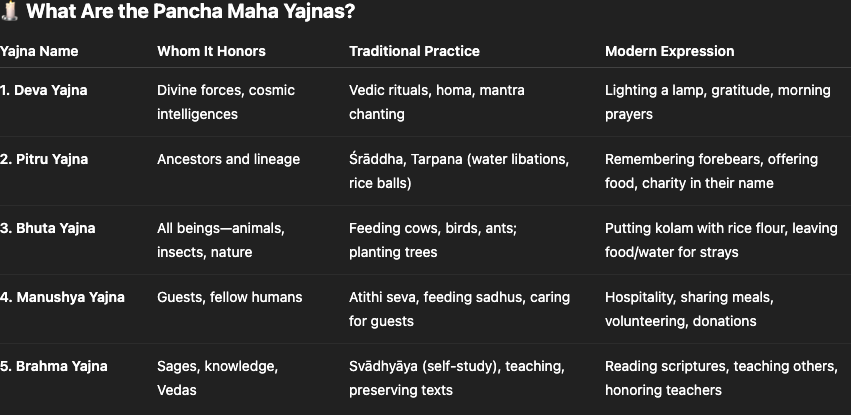
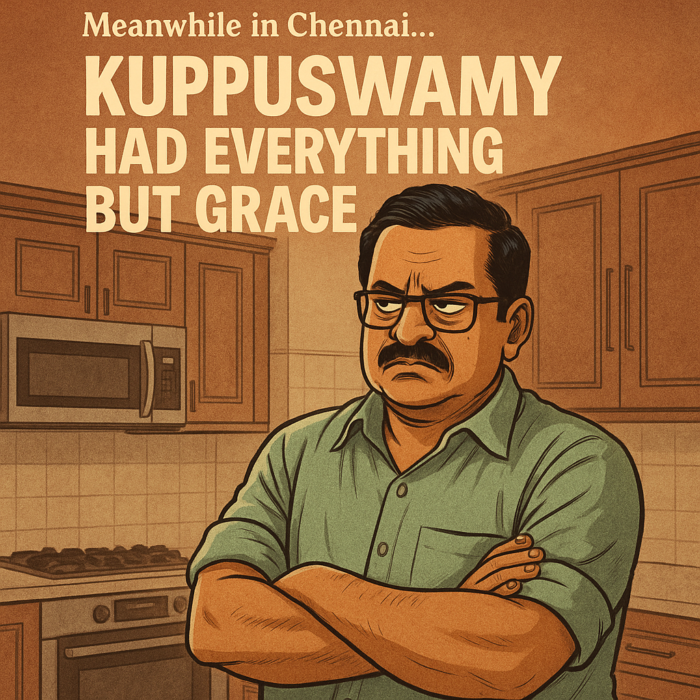

The Thunder, the Blanket, and the Flute
It was a night the sky wept.
Thunder cracked. The lights went out in the sleepy town of Senkottai. Four little children huddled under a single blanket.
They were scared.
Their grandfather, Raja Thatha, lit an oil lamp. The flame shook like their hands. He sat down in his wooden chair, the same one his father sat in.
“Thatha… is the sky angry?” one of them whispered.
Raja Thatha smiled.
“No, kanna. The sky is remembering something... something we’ve forgotten.”
He cleared his throat. And like Krishna’s flute in Kurukshetra, his voice cut through the storm.
“Let me tell you a story. A story of love in poverty, of compassion in hunger, and of a man who fed not with money, but with his soul.”
The Rice That Fed the Sky
“There once lived a man called Subramania Bharathi—poet, freedom fighter, mystic. But the world, though it quoted his verses, gave him no job. No coins jingled in his pocket. Only fire flowed from his pen.”
His wife, Chellammal, was the silent soldier of that home. She sold her dignity daily to feed them—borrowing rice from neighbors, hiding tears from their daughter.
One day, after much pleading, she brought home a small bag of rice. Enough for one meal.
She smiled softly.
“Today, we’ll eat without shame.”
She spread the rice in the backyard to dry under the sun. And then… went inside for a bath.
When she returned...
The rice was gone.
Sparrows chirped. Crows danced. The backyard bloomed with feathers and crumbs.
And in the middle of it all stood Bharathi—eyes shining, smiling like a sage who had just finished a yajña.
Chellammal froze.
“That was all we had! What have you done?”
Bharathi looked at her—not with apology, but with wonder.
He pointed at the birds still pecking joyfully.
“Had we eaten it, Chellamma… only our two mouths would’ve been fed. But look… how many mouths we fed today.”
The children stared at Thatha, stunned.
“He gave away the only rice they had?” one asked.
Raja Thatha nodded.
“Yes, kanna. And yet… that day, the gods had a feast.”
“Because sometimes, what we offer in hunger feeds more souls than what we hoard in comfort.”
The Forgotten Dharma of Sanatana Life
Raja Thatha leaned forward:
“In Sanatana Dharma, life itself is a sacrifice. A yajña. A cosmic offering.”
We draw kolam(rangoli) with rice flour, not for beauty, but to feed ants. We offer not just to God, but to:
Ancestors – Pitru Yajna
Strangers & Guests – Nri/Aditi Yajna
Animals & Insects – Bhuta Yajna
Teachers & Knowledge – Brahma Yajna
Divine Forces – Deva Yajna
“Even cooking is killing,” Thatha whispered. “Our stove burns. Our broom displaces. Our grinder crushes. Our water kills. Every home is a silent slaughterhouse unless we offer back.”
In all the above actions, we kill several life daily- Unknowingly. Only offering cleanses it.
Karma Is Not What You Do. It’s What You Offer.
In Sanatana Dharma, life itself is an offering. Even your kitchen is a sacred altar—your broom, pestle, water pot… they kill. They harm. You can’t avoid karma.
But you can wash it daily—with intentional offering.
Not just to God. To ants, guests, ancestors, birds, strangers.
Even the rice-flour kolam at your doorstep is a meal for insects.
This isn’t charity. It’s balance. It’s Karma Yoga.
What the Gita Actually Says (And What We Forgot)
Gita 3.11–3.15 speaks of yajña—not rituals, but offering as a way of life.
🔸 3.11 — Mutual nourishment: You feed others; the cosmos feeds you.
🔸 3.12 — Take without giving? That’s theft.
🔸 3.13 — Eating without offering? That’s sin, not supper.
🔸 3.14 — Rain comes from yajña. That means luck, grace, the right phone call.
🔸 3.15 — Even Dharma is rooted in sacrifice.
The universe remembers givers. It rewards those who act as if they’re part of something larger. It rains—not on temples—but on homes where something is shared.
🏢 Meanwhile in Chennai… Kuppuswamy Had Everything But Grace
Raja Thatha’s voice softened as thunder rumbled in the distance:
“Children… not every man is Bharathi. Let me tell you about Kuppuswamy.”
Kuppuswamy lived in T. Nagar, Chennai. Imported tiles. Italian kitchen. Two-door fridge that beeped if you left it open for more than three seconds.
He had wealth, Wi-Fi, and a weather app. What he didn’t have? Offering.
One day, his maid asked,
“Saar, can I take the leftover sambhar?”
Kuppuswamy winced as if she’d asked for his kidney.
“No, no. If I let you take it once, tomorrow the whole street will queue up. We’re not running a temple annadhaanam here.”
That same night, he logged into a bhajan Zoom call. Sang “Krishna Nee Begane Baro” with perfect sruti. And closed the app before the last line finished.
He ate quietly. Alone. The dog outside barked, then stopped coming altogether. Even the crow lost interest.
His wife once drew kolam with rice flour. He scolded her:
“You’re inviting ants. Are we feeding pests now?”
She never drew one again.
Raja Thatha adjusted his shawl and looked at his grandchildren.
“Kuppuswamy prayed to Krishna, yes. But Krishna only visits homes where the food smells of compassion—not coriander.”
“He had a full fridge. But no warmth. A water filter. But no flow of kindness. He bought a new car. But didn’t drop anyone who needed a lift.”
The youngest child asked,
“But Thatha, he didn’t steal anything. Why is it wrong?”
Raja Thatha smiled.
“Ah. That’s where Gita 3.12 comes in. You don’t need to break locks to be a thief. If you eat without offering… you’ve stolen from the gods.”
“Kuppuswamy ate every day. But he fed no one—not guest, not crow, not even memory.”
“So yes, he had a lot. But tell me, children—did he really live?”
Final Thought: Are You Rainworthy?
Rain is not just water. It is luck at the right moment. It is a yes when all doors were no. It is a stranger who helps, a friend who stays, a burden that lifts.
The sky doesn’t pour where there is greed. It pours where there is grace.
And sometimes, the one who gave away a single borrowed meal? He ends up feeding the whole world.